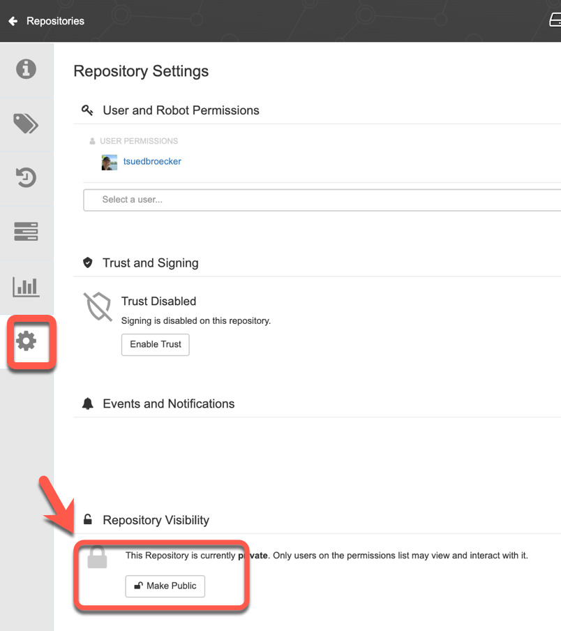
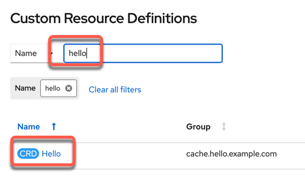
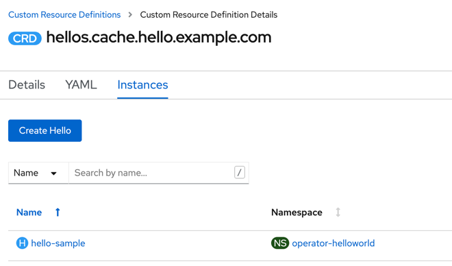

Exercise 3¶
In this exercise you will complete the following:
- Create a Quay.io account
- Build image of our Operator and push it to Quay.io
- Deploy Operator to OpenShift cluster
Preview¶
Here you can see an example deployment of the HelloWorld operator we will create in this exercise, by using an existing container image from the Quay.io container registry and then we create a new HellowWorld application using the operator inside your RedHat OpenShift Cluster:
- Deploy operator gif:

- Create HelloWorld app using the operator gif:

Step 1: Create Quay.io Account¶
Quay.io us a container registry provided by Red Hat. You can create your own account push container images to it. Each image can be public or private. To make images available to OpenShift you will need to make them public.
Go to Quay.io and create your own account if you don't have one and then login to Quay.io.
docker login quay.io
Step 2: Build Operator image and push to quay.io¶
sudo make docker-build docker-push IMG=quay.io/ktenzer/operator-helloworld:latest
Make the operator-helloworld image in your quay.io account public. Logon to quya.io, click on the image. Under `settings (on the left) there is option to make the image public.

Step 3: Deploy Operator to OpenShift Cluster¶
By default the operator will be deployed to a project called operator-helloworld-system. The operator is called operator-helloworld-controller-manager.
make deploy IMG=quay.io/ktenzer/operator-helloworld:latest
As you see in the example output, we create or configure ...
- ... Namespace
- ... Custom resource
- ... Leader election role
- ... Manager Role
- ... Proxy Role
- ... Metrixs reader
- ... Leader election role binding
- ... Manager role binding
- ... Proxy role binding
- ... Controller Manager metrics service
- ... Controller Manager
Example output:
cd config/manager && /home/ubuntu/operator-helloworld/bin/kustomize edit set image controller=quay.io/ktenzer/operator-helloworld:latest
/home/ubuntu/operator-helloworld/bin/kustomize build config/default | kubectl apply -f -
namespace/operator-helloworld-system created
customresourcedefinition.apiextensions.k8s.io/hellos.cache.hello.example.com created
role.rbac.authorization.k8s.io/operator-helloworld-leader-election-role created
clusterrole.rbac.authorization.k8s.io/operator-helloworld-manager-role created
clusterrole.rbac.authorization.k8s.io/operator-helloworld-metrics-reader created
clusterrole.rbac.authorization.k8s.io/operator-helloworld-proxy-role created
rolebinding.rbac.authorization.k8s.io/operator-helloworld-leader-election-rolebinding created
clusterrolebinding.rbac.authorization.k8s.io/operator-helloworld-manager-rolebinding created
clusterrolebinding.rbac.authorization.k8s.io/operator-helloworld-proxy-rolebinding created
service/operator-helloworld-controller-manager-metrics-service created
deployment.apps/operator-helloworld-controller-manager created
Note: You can change project name by editing the config/default/kustomization.yaml file.
- Verify Operator Deployment
oc get deployment -n operator-helloworld-system
Example output:
NAME READY UP-TO-DATE AVAILABLE AGE
helloworld-controller-manager 1/1 1 1 37s
Optional: Open your RedHat OpenShift web console select Developer perspective and Topology. Ensure you are in the operator-helloworld-system project.

Step 4: Deploy a Helloworld Application using Operator¶
Using the Operator we just deployed into the operator-helloworld-system project we will now deploy the application using CR.
- Create the application using the operator
oc create -f config/samples/cache_v1_hello.yaml -n operator-helloworld-system
- Get the deploment information from the project
oc get deployment -n operator-helloworld-system
Example output:
NAME READY UP-TO-DATE AVAILABLE AGE
helloworld 1/1 1 1 12m
helloworld-controller-manager 1/1 1 1 12m
Optional: Open your RedHat OpenShift web console select Developer perspective and Topology. Ensure you are in the operator-helloworld-system project.

Optional: Open your RedHat OpenShift web console select Administrator perspective and Custom Resource Definition
- Search for
Helloand press CRDHello

Now you see the two two created hello-samples.
- One in the project
operator-helloworldcreated the operator running on the local machine - One in the project
operator-helloworld-systemcreated by thehelloworld-controller-managerin the RedHat OpenShift Cluster

Step 5: Cleanup Application¶
Removing the CR will delete everything that was created by it since the objects are linked to the CR.
oc delete hello hello-sample -n operator-helloworld-system
Example output:
hello.cache.hello.example.com "hello-sample" deleted
You see there is one remaining.

Step 6: Verify the operator is remaining in the deployment of the operator-helloworld-system project.¶
oc get deployment -n operator-helloworld-system
Example output:
NAME READY UP-TO-DATE AVAILABLE AGE
operator-helloworld-controller-manager 1/1 1 1 153m
Step 7: Cleanup Operator¶
This will remove the Operator, CRD and all the roles.
make undeploy
Example output:
/home/ubuntu/operator-helloworld/bin/kustomize build config/default | kubectl delete -f -
namespace "operator-helloworld-system" deleted
customresourcedefinition.apiextensions.k8s.io "hellos.cache.hello.example.com" deleted
role.rbac.authorization.k8s.io "operator-helloworld-leader-election-role" deleted
clusterrole.rbac.authorization.k8s.io "operator-helloworld-manager-role" deleted
clusterrole.rbac.authorization.k8s.io "operator-helloworld-metrics-reader" deleted
clusterrole.rbac.authorization.k8s.io "operator-helloworld-proxy-role" deleted
rolebinding.rbac.authorization.k8s.io "operator-helloworld-leader-election-rolebinding" deleted
clusterrolebinding.rbac.authorization.k8s.io "operator-helloworld-manager-rolebinding" deleted
clusterrolebinding.rbac.authorization.k8s.io "operator-helloworld-proxy-rolebinding" deleted
service "operator-helloworld-controller-manager-metrics-service" deleted
deployment.apps "operator-helloworld-controller-manager" deleted
Step 8: Verify the operator is deleted¶
oc get deployment -n operator-helloworld-system
No resources found in operator-helloworld-system namespace.
You can also verify the Customer Resource Definition for hello in the web console.

Congrats, if you got this far you are ready to write your own Operators in Ansible!